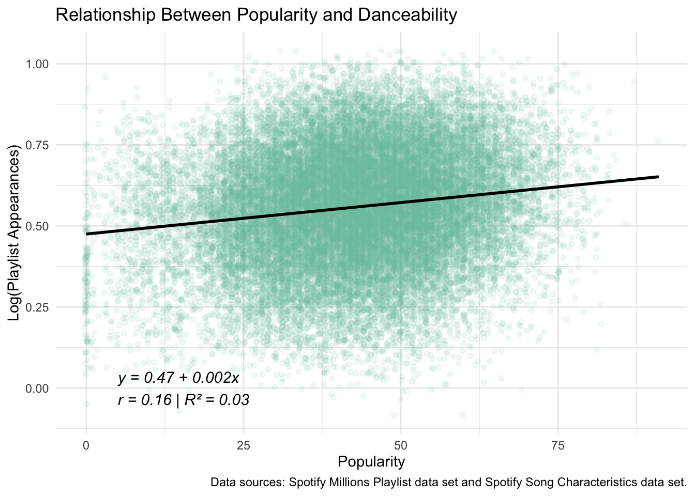

The Ultimate Playlist: Valence Synth Wave
Nomination
I hereby nominate this playlist for the Internet’s Best Playlist award. Valence Synth Wave was intentionally crafted to optimize an emotional build-up and release by ordering the songs so that their valence (a measure of musical positivity) follows a cosine wave. This approach was algorithmically driven to create an emotional arc that feels both natural and dynamic.
The figure below visualizes how various song characteristics evolve across the playlist. There is a clear fluctuation across the different characteristics–guaranteeing an emotionally diverse listening experience.
Tracklist
| Position | Track Name | Artist Name | Album Name | Year |
|---|---|---|---|---|
| 1 | Forever Young | Alphaville | Forever Young | 1984 |
| 2 | The Blue Sky | a-ha | Hunting High And Low | 1985 |
| 3 | Whip It | DEVO | Freedom Of Choice | 1980 |
| 4 | Love Plus One | Haircut 100 | Pelican West Plus | 1982 |
| 5 | Lonely Ol’ Night | John Mellencamp | Scarecrow | 1985 |
| 6 | What You Need | INXS | Listen Like Thieves | 1985 |
| 7 | I Drink Alone | George Thorogood & The Destroyers | Maverick | 1985 |
| 8 | I Need Someone Like Me | George Strait | Does Fort Worth Ever Cross Your Mind | 1984 |
| 9 | Music For A Found Harmonium - 2008 Digital Remaster | Penguin Cafe Orchestra | Broadcasting From Home | 1984 |
| 10 | Flash - Single Version | Queen | Flash Gordon | 1980 |
| 11 | I Love You Babe | Babyface | Lovers | 1986 |
| 12 | Strut | Sheena Easton | A Private Heaven [Bonus Tracks Version] | 1984 |
Description
This playlist is a nod to the range of sentimentality that only the 80s could deliver—a time when synthesizers carried both dreams and dread. The opening song, “Forever Young” by Alphaville, sets a somber mood, with lead singer Marian Gold reflecting on the looming threat of nuclear annihilation haunting his generation, “Hoping for the best, but expecting the worst / Are you gonna drop the bomb or not?” This existential dread gives way to something more personal in a-ha’s “The Blue Sky,” where we find ourselves at a coffee shop mourning a lost love. A sensitive and forlorn Morten Harket laments, “It doesn’t seem like this / Blue sky’s here for me.”
We pivot into something more energetic with “Whip It” by DEVO, a nonsensical but peppy call to arms for personal empowerment. “Love Plus One” by Haircut 100 delves deeper into playful absurdity, hinting at the sun-soaked tropics with bongos and xylophones. This is followed by John Mellencamp’s “Lonely Ol’ Night,” a Springsteen-esque rock ballad about seeking fleeting comfort in the face of isolation. “It’s a lonely ol’ night / Can I put my arms around you?” Mellencamp pleads. Meanwhile, INXS’s “What You Need” snaps us out of the melancholy with swagger and urgency with a thumping bass-line and slashes of saxophone.
The mood darkens with George Thorogood & The Destroyers’ “I Drink Alone”—an edgy, bluesy anthem of solitude that doubles as a cry for help. Thorogood delivers each line with such boozy conviction, that you can practically smell the whiskey on his breath. Then George Strait’s “I Need Someone Like Me” shifts that loneliness to a country register.
Then “Music For A Found Harmonium” by Penguin Cafe Orchestra plunges us into a simmering tension that gently unravels into a disarmingly playful, jig-like melody. With a flash-bang, Queen’s “Flash” brings bold, bombastic, and camp energy. “I Love You Babe” by Babyface follows with warmth and sincerity, an earnest slow jam that finally says what it means. We close on a high note with Sheena Easton’s “Strut,” a fiercely confident song that dares anyone to look away.
Click play to start an emotionally engineered ride through the 1980s!
Appendix
This data analysis was performed using R, using packages including dplyr, ggplot2, readr, stringr, forcats, DT, and knitr (Team, 2024; Wickham, 2016, 2023, 2024; Wickham et al., 2024; Wickham & Hester, 2024; Xie et al., 2024; Xie, 2024).
Data Import
Song Characteristics Dataset
The song characteristics data set was downloaded from this URL, using the code below:
Code
# Imports
library(tidyverse)
library(ggplot2)
library(DT)
library(dplyr)
library(knitr)
library(scales)
# constants
MINTY <- "#78c2ad"
#' Load Spotify song data
#'
#' This function checks for the existence of a local CSV file containing Spotify song data.
#' If the file does not exist, it downloads it from a remote URL. The function then reads and returns the data as a tibble.
#'
#' @return A tibble containing Spotify song analytics data.
load_songs <- function() {
directory <- "data/mp03/"
file_name <- paste0(directory, "spotify_song_analytics.csv")
# Create the data directory if it doesn't exist
if (!dir.exists(directory)) {
dir.create(directory, recursive = TRUE)
}
# Download the data file if it's not already present
if (!file.exists(file_name)) {
download.file(
url = "https://raw.githubusercontent.com/gabminamedez/spotify-data/refs/heads/master/data.csv",
destfile = file_name,
method = "auto"
)
}
# Read the CSV into a tibble
songs <- readr::read_csv(file_name)
return(songs)
}
# Load songs into a dataframe
songs <- load_songs()A small amount of clean up was required for this data set. The code used to process the raw data set is presented below.
Code
# Instructor provided code for cleaning artist string
clean_artist_string <- function(x){
x |>
str_replace_all("\\['", "") |>
str_replace_all("'\\]", "") |>
str_replace_all("[ ]?'", "") |>
str_replace_all("[ ]*,[ ]*", ",")
}
# Split songs with multiple artists into separate rows and clean artist names
songs <-
songs |>
separate_longer_delim(artists, ",") |>
mutate(artist = clean_artist_string(artists)) |>
select(-artists)Playlists Dataset
The playlists data set was downloaded from this URL, using the code outlined below:
Code
#' Load Spotify playlist data
#'
#' This function downloads and/or reads the Million Playlist Dataset slices from
#' a GitHub repository. If `read_only = TRUE`, it skips downloading and only reads
#' existing local files.
#'
#' @param read_only Logical. If TRUE, skips download and only loads local data. Default is FALSE.
#' @return A list of parsed JSON objects representing playlist data.
load_playlists <- function(read_only = FALSE) {
source_root_url <- "https://raw.githubusercontent.com/DevinOgrady/spotify_million_playlist_dataset/main/data1/"
directory <- "data/mp03/mpd/"
# Create directory if it doesn't exist
if (!dir.exists(directory)) {
dir.create(directory, recursive = TRUE)
}
if (!read_only) {
# Loop over all playlist slice file names
for (i in seq(0, 999000, by = 1000)) {
fname <- paste0(
"mpd.slice.",
format(i, scientific = FALSE), "-",
format(i + 999, scientific = FALSE),
".json"
)
fpath <- file.path(directory, fname)
# Download file if it's not already present
if (!file.exists(fpath)) {
Sys.sleep(0.01) # Avoid hitting rate limits
tryCatch({
invisible(download.file(
url = paste0(source_root_url, fname),
destfile = fpath,
method = "auto",
quiet = TRUE
))
}, error = function(e) {
message("Download failed: ", fname)
})
}
}
}
# Read all the JSON files in the directory
json_files <- list.files(directory, pattern = "\\.json$", full.names = TRUE)
all_data <- vector("list", length(json_files))
for (i in seq_along(json_files)) {
tryCatch({
all_data[[i]] <- suppressWarnings(jsonlite::fromJSON(json_files[i]))
}, error = function(e) {
message("Failed to read: ", json_files[i])
})
}
return(all_data)
}
SPOTIFY_MILLIONS <- load_playlists()Since the playlist data set was hierarchical, it required “rectangling,” to be adapted for use in this analysis. This process was accomplished with the following code.
Code
#' Process a Spotify playlist slice
#'
#' This function processes a single playlist slice from the Million Playlist Dataset,
#' extracting track information and saving it as a CSV file for faster future loading.
#' It strips Spotify URI prefixes and appends playlist metadata.
#'
#' @param playlist A list object representing one slice of the Spotify playlist data (parsed JSON).
#' @return A data frame (tibble) of processed track data with playlist-level metadata.
process <- function(playlist) {
# Instructor provided helper function to strip Spotify URI prefix
strip_spotify_prefix <- function(x) {
str_replace(x, ".*:.*:", "")
}
# Create the output directory if it doesn't exist
output_dir <- "data/mp03/processed"
if (!dir.exists(output_dir)){
dir.create(output_dir, showWarnings = FALSE)
}
# Generate filename for processed slice
slice_range <- playlist$info$slice
csv_outfile <- paste0(output_dir, "/mpd.slice.", slice_range, ".csv")
# If CSV already exists, load it instead of reprocessing
if (file.exists(csv_outfile)){
all_tracks <- readr::read_csv(csv_outfile)
} else {
all_tracks <- data.frame() # Placeholder for all processed tracks
for (i in seq_along(playlist$playlists$tracks)) {
tracks_df <- as.data.frame(playlist$playlists$tracks[[i]])
# Skip empty playlists
if (nrow(tracks_df) == 0) next
# Add metadata and clean up Spotify URIs
tracks_df <- tracks_df |>
mutate(
playlist_name = playlist$playlists$name[i],
playlist_id = playlist$playlists$pid[i],
playlist_followers = playlist$playlists$num_followers[i],
track_uri = strip_spotify_prefix(track_uri),
artist_uri = strip_spotify_prefix(artist_uri),
album_uri = strip_spotify_prefix(album_uri)
)
# Combine with all previously processed tracks
all_tracks <- bind_rows(all_tracks, tracks_df)
}
# Save the processed data for this slice
write.csv(all_tracks, csv_outfile, row.names = FALSE)
message("Saved: ", csv_outfile)
}
return(all_tracks)
}
#' Merge all processed playlist slices into a single dataset
#'
#' This function checks if a master CSV file (`spotify_millions.csv`) already exists.
#' If not, it processes all playlist JSON slices provided and merges them into one
#' unified dataframe, then saves it as a CSV for future use. If the file already exists,
#' it loads the data directly.
#'
#' @param data A list of playlist slices (parsed JSON). Defaults to `master_json`.
#' @return A dataframe containing the merged Spotify playlist data.
merge_processed_playlists <- function(data = master_json) {
# Path to the master output CSV
spotify_millions_fpath <- "data/mp03/spotify_millions.csv"
if (!file.exists(spotify_millions_fpath)) {
# If no master file exists, process each playlist slice
playlists <- data.frame() # Initialize an empty dataframe
for (i in seq_along(master_json)) {
playlist <- master_json[[i]]
processed_df <- process(playlist) # Process individual slice
playlists <- bind_rows(playlists, processed_df) # Append to master dataframe
}
# Clean up and standardize column names
playlists <- playlists |>
rename(
playlist_position = `pos`,
track_id = `track_uri`,
artist_id = `artist_uri`,
album_id = `album_uri`,
duration = `duration_ms`
) |>
select(!`...1`) # Drop the unnamed index column
# Save merged data to CSV
write.csv(playlists, spotify_millions_fpath, row.names = FALSE)
} else {
# If file exists, just read it
playlists <- readr::read_csv(spotify_millions_fpath)
}
return(playlists)
}
# Load or process the Spotify Millions json dataset
SPOTIFY_MILLIONS <- merge_processed_playlists(SPOTIFY_MILLIONS)Initial Exploration
Once the data were squared away, I completed an instructor-led preliminary data analysis, the results of which are tabulated below. First, I compute the total number of distinct tracks and artists contained in this data set.
Code
# How many distinct tracks and artists are represented in the playlist data?
fname <- "data/mp03/num_distinct.csv"
if (!file.exists(fname)){
num_distinct <-
SPOTIFY_MILLIONS |>
distinct(track_id) |>
summarize(`Distinct Tracks` = n()) |>
cross_join(SPOTIFY_MILLIONS |>
distinct(artist_id) |>
summarize(`Distinct Artists` = n()))
write.csv(num_distinct, fname, row.names = FALSE)
} else{
num_distinct <- readr::read_csv(fname)
}
num_distinct |>
mutate(across(where(is.numeric), comma)) |>
kable(caption = "Table 1: Count of Distinct Tracks and Artists in the Playlist Dataset")| Distinct Tracks | Distinct Artists |
|---|---|
| 1,200,590 | 173,604 |
Next, I identify the 5 most popular tracks in the playlist data.
Subsequently, I determine the most popular track in the playlist data that does not have a corresponding entry in the song characteristics data set.
I now look at the most danceable track in the playlist data, and count the number of times it appears in a playlist.
Then, I locate the playlist with the longest average track length.
Finally, I identify the most popular playlist in the playlist data set.
Identifying the Characteristics of Popular Songs
Joining the Data Sets
I joined the playlist and song characteristic data sets as in the code below. The Spotify playlist data and the song characteristics data was subsequently deleted to free up RAM.
Code
merged_fpath <- "data/mp03/spotify_millions_songs_join.csv"
if (!file.exists(merged_fpath)){
spotify_millions_songs <-
SPOTIFY_MILLIONS |>
inner_join(songs, join_by(track_id == id, track_name == name, artist_name == artist, duration == duration_ms)) |>
mutate(decade = paste0((year %/% 10) * 10, "s"))
write.csv(spotify_millions_songs, merged_fpath, row.names = FALSE)
} else{
spotify_millions_songs <- readr::read_csv(merged_fpath)
}
if (exists(SPOTIFY_MILLIONS) & exists(songs)){
rm(SPOTIFY_MILLIONS, songs)
}Analysis
A brief, instructor-led analysis of the playlist data set is included below. To explore whether more popular songs tend to appear in more playlists, a linear regression was performed using popularity as the predictor and the log-transformed count of playlist appearances as the outcome. The figure below illustrates this relationship. The model shows a fairly strong positive association, with a regression equation of \(y = -1.25 + 0.10x\), a correlation of \(r = 0.77\), and a coefficient of determination \(R^2 = 0.59\). This suggests that popularity is a reasonably good predictor of how often a song shows up in playlists.
Code
# Is the popularity column correlated with the number of playlist appearances? If so, to what degree?
# Prep the data
data <- spotify_millions_songs |>
add_count(track_id, name = "playlist_appearances") |>
distinct(track_id, .keep_all = TRUE) |>
mutate(log_appearances = log1p(playlist_appearances))
# Fit the model
model <- lm(log_appearances ~ popularity, data = data)
# Get model metrics
model_eq <- broom::tidy(model)
r_squared <- broom::glance(model)$r.squared
correlation <- cor(data$popularity, data$log_appearances, use = "complete.obs")
# Build the equation text
eq_text <- paste0(
"y = ", round(model_eq$estimate[1], 2), " + ",
round(model_eq$estimate[2], 3), "x\n",
"r = ", round(correlation, 2),
" | R² = ", round(r_squared, 2)
)
# Plot
ggplot(data, aes(x = popularity, y = log_appearances)) +
geom_jitter(alpha = 0.1, width = 0.3, height = 0.1, color = MINTY) +
geom_point(alpha = 0.1, width = 0.3, height = 0.1, color = MINTY) +
geom_smooth(method = "lm", se = FALSE, color = "black") +
annotate("text", x = 12.75, y = -1,
label = eq_text, hjust = 0, size = 4, fontface = "italic") +
labs(
title = "Figure 1: Relationship Between Popularity and Playlist Appearances",
caption = "Data sources: Spotify Millions Playlist data set and Spotify Song Characteristics data set.",
x = "Popularity",
y = "Log(Playlist Appearances)"
) +
theme_minimal()Median track popularity by year is presented in the figure below. The general trend is that track popularity is higher with release year. Notably, 2017 stands out as the year with the highest median song popularity.
Code
# In what year were the most popular songs released?
spotify_millions_songs |>
distinct(track_id, .keep_all = TRUE) |>
group_by(year) |>
summarize(median_popularity = median(popularity, na.rm = TRUE)) |>
ggplot(aes(x = year, y = median_popularity)) +
geom_line(color = MINTY, linewidth = 1.2) +
geom_point(color = MINTY, size = 2) +
scale_x_continuous(
breaks = seq(min(pull(spotify_millions_songs, year), na.rm = TRUE),
max(pull(spotify_millions_songs, year), na.rm = TRUE),
by = 10)
) +
labs(
x = "Year",
y = "Median Track Popularity",
title = "Median Track Popularity by Year",
caption = "Data sources: Spotify Millions Playlist data set and Spotify Song Characteristics data set."
) +
theme_minimal()While median song popularity continues to keep up with the times, median track dance-ability peaked in 1929. The figure below presents the evolution of track dance ability over the past 90 years.
Code
# In what year did danceability peak?
spotify_millions_songs |>
distinct(track_id, .keep_all = TRUE) |>
group_by(year) |>
summarize(median_danceability = median(danceability, na.rm = TRUE)) |>
ggplot(aes(x = year, y = median_danceability)) +
geom_line(color = MINTY, linewidth = 1.2) +
geom_point(color = MINTY, size = 2) +
scale_x_continuous(
breaks = seq(min(pull(spotify_millions_songs, year), na.rm = TRUE),
max(pull(spotify_millions_songs, year), na.rm = TRUE),
by = 10)
) +
labs(
x = "Year",
y = "Median Track Danceability",
title = "Median Track Danceability by Year",
caption = "Data sources: Spotify Millions Playlist data set and Spotify Song Characteristics data set."
) +
theme_minimal()The most represented decade on user playlists is the 2010s. The bar chart below presents the distribution of tracks belonging to a particular decade.
Code
# Which decade is most represented on user playlists? (The integer division (%/%) operator may be useful for computing decades from years.)
spotify_millions_songs |>
mutate(decade = paste0((year %/% 10) * 10, "s")) |>
group_by(decade) |>
summarize(decade_count = n()/10000) |>
ggplot(aes(x = decade_count, y = factor(decade))) +
geom_bar(stat = "identity", fill = MINTY) +
labs(
x = "Number of Tracks (in tens of thousands)",
y = "Decade",
title = "Decade Representation in Playlists",
caption = "Data sources: Spotify Millions Playlist data set and Spotify Song Characteristics data set."
) +
theme_minimal() +
theme(
axis.text.y = element_text(angle = 45, hjust = 1)
)The most popular musical key is G, as can be seen in the figure of key distribution frequency below.
Code
# Create the key names
key_names <- c(
"C", "C♯/Db", "D", "D♯/Eb", "E", "F",
"F♯/Gb", "G", "G♯/Ab", "A", "A♯/Bb", "B"
)
# Count frequency per key and label with musical key names
data <- spotify_millions_songs |>
distinct(track_id, .keep_all = TRUE) |>
count(key, name = "key_frequency") |>
mutate(key_label = factor(key_names[key + 1], levels = key_names))
# Create label positions at fixed theta, variable radius
y_values <- seq(1000, max(data$key_frequency), by = 1000)
radial_labels <- tibble(
x = rep("D♯/Eb", length(y_values)), # Repeat "C" the same number of times as y values
y = y_values,
label = as.character(y_values)
)
# Plot with polar coordinates and annotations
ggplot(data, aes(x = key_label, y = key_frequency, fill = key_label)) +
geom_bar(stat = "identity", width = 1) +
coord_polar(start = 0) +
geom_text(data = radial_labels, aes(x = x, y = y, label = label),
inherit.aes = FALSE, size = 3, color = "gray20", hjust = -0.2) +
labs(
x = NULL, y = NULL,
title = "Distribution of Musical Keys",
caption = "Data sources: Spotify Millions Playlist data set and Spotify Song Characteristics data set."
) +
theme_minimal() +
theme(
axis.text.y = element_blank(),
axis.ticks = element_blank(),
legend.position = "none"
)As shown in the figure below, there does not appear to be a strong preference for any particular track length, with short, medium, and long songs appearing at roughly equal frequencies. Length categories are defined by terciles: short songs are under 199.08 seconds (\(33^{rd}\) percentile), medium songs fall between 199.08 and 253.4 seconds (\(33^{rd}\)–\(66^{th}\) percentile), and long songs exceed 253.4 seconds.
Code
# What are the most popular track lengths? (Are short tracks, long tracks, or something in between most commonly included in user playlists?)
duration_percentiles <- spotify_millions_songs |>
distinct(track_id, .keep_all = TRUE) |>
filter(!is.na(duration)) |>
mutate(duration_sec = duration / 1000) |>
summarize(
p33 = quantile(duration_sec, 0.33),
p66 = quantile(duration_sec, 0.66)
)
# Pull out threshold values
p33 <- duration_percentiles$p33
p66 <- duration_percentiles$p66
# Categorize and plot
spotify_millions_songs |>
distinct(track_id, .keep_all = TRUE) |>
filter(!is.na(duration)) |>
mutate(
duration_sec = duration / 1000,
duration_category = case_when(
duration_sec <= p33 ~ "Short",
duration_sec <= p66 ~ "Medium",
TRUE ~ "Long"
)
) |>
count(duration_category) |>
ggplot(aes(x = duration_category, y = n, fill = duration_category)) +
geom_col() +
labs(
caption = "Data sources: Spotify Millions Playlist data set and Spotify Song Characteristics data set.",
title = "Song Duration Categories",
x = "Duration Category",
y = "Number of Unique Tracks"
) +
scale_y_continuous(labels = comma_format()) +
scale_fill_manual(
name = "Duration Category",
values = c("Short" = MINTY, "Medium" = "#fdd835", "Long" = "#ef5350")) +
theme_minimal()A linear regression analysis reveals a very weak positive relationship between danceability and popularity, with a coefficient of determination (\(R^2\)) of just 0.03. This suggests that only 3% of the variability in popularity can be explained by danceability. The scatter plot below illustrates this weak association.
Code
# Does danceability correlate with popularity?
data <- spotify_millions_songs |>
distinct(track_id, .keep_all = TRUE)
# Fit the model
model <- lm(danceability ~ popularity, data = data)
# Get model metrics
model_eq <- broom::tidy(model)
r_squared <- broom::glance(model)$r.squared
correlation <- cor(data$popularity, data$danceability, use = "complete.obs")
# set up annotation
eq_text <- paste0(
"y = ", round(model_eq$estimate[1], 2), " + ",
round(model_eq$estimate[2], 3), "x\n",
"r = ", round(correlation, 2),
" | R² = ", round(r_squared, 2)
)
# Plot
ggplot(data, aes(x = popularity, y = danceability)) +
geom_jitter(alpha = 0.1, width = 0.3, height = 0.1, color = MINTY) +
geom_smooth(method = "lm", se = FALSE, color = "black") +
annotate("text", x = 5, y = 0,
label = eq_text, hjust = 0, size = 4, fontface = "italic") +
labs(
title = "Relationship Between Popularity and Danceability",
caption = "Data sources: Spotify Millions Playlist data set and Spotify Song Characteristics data set.",
x = "Popularity",
y = "Log(Playlist Appearances)"
) +
theme_minimal()
To understand which songs are most frequently chosen to open a playlist, I examined tracks appearing in the first position across playlists. The bar chart below displays the top 5 most common opening songs, revealing listener and curator preferences for kick-starting a playlist. Not surprisingly, many of these opening tracks are high-energy or popular.
Code
# What are the top 5 most common opening playlist songs?
spotify_millions_songs |>
filter(playlist_position == 0) |>
add_count(track_id, name = "song_frequency") |>
distinct(track_id, .keep_all = TRUE) |>
arrange(desc(song_frequency)) |>
slice_head(n = 5) |>
ggplot(aes(x = song_frequency, y = fct_reorder(paste0(track_name, "\n", artist_name), song_frequency))) +
geom_bar(stat = "identity", fill = MINTY) +
labs(
title = "Top 5 Most Popular Opening Playlist Songs",
caption = "Data sources: Spotify Millions Playlist data set and Spotify Song Characteristics data set.",
x = "Number of Playlists (Opening Position)",
y = "Track Name"
) +
theme_minimal()Playlist Construction
Choosing Anchor Songs
Since I’ve been on an 80s kick recently, I picked the anchor songs shown in table 7.
Code
# base songs
song1 <- spotify_millions_songs |> filter(track_id == "4S1VYqwfkLit9mKVY3MXoo") # Forever Young by Alphaville
song2 <- spotify_millions_songs |> filter(track_id == "22Ca1a5rQ5g2UFEZ3pp4tL") # The Blue Sky by a-ha
anchor_songs <- list(song1, song2)
bind_rows(song1,song2) |>
select(track_name, artist_name, album_name, year) |>
distinct(track_name, .keep_all = TRUE) |>
rename(
"Track Name" = track_name,
"Artist Name" = artist_name,
"Album Name" = album_name,
"Year" = year
) |>
kable(caption = "Table 7: Anchor Songs Chosen for the Ultimate Playlist")| Track Name | Artist Name | Album Name | Year |
|---|---|---|---|
| Forever Young | Alphaville | Forever Young | 1984 |
| The Blue Sky | a-ha | Hunting High And Low | 1985 |
Creating a Candidate Pool
To determine compatibility with the anchor songs, I applied the following heuristics:
Co-occurrence: Songs that frequently appear on playlists alongside the anchor songs.
Musical similarity: Songs in the same key and with a tempo within \(\pm5\) BPM of the anchor.
Artist match: Songs by the same artist(s) as the anchor tracks.
Audio profile similarity: Songs released in the same year and exhibiting similar values for acousticness, dance-ability, energy, instrumentalness, liveness, loudness, speechiness, and valence. Similarity is measured using Euclidean distance: \[d = \sqrt{\sum_{i=1}^{n} (x_i - y_i)^2}\] where \(x_i\) and \(y_i\) are the characteristic values for the anchor and candidate songs, respectively.
Decade match and structural similarity: Songs from the same decade and duration within \(\pm\) 15 seconds of the anchor song.
The application of these heuristics is implemented in the code below.
Code
fname <- "data/mp03/peer_songs.csv"
if (!file.exists(fname)){
# What other songs commonly appear on playlists along side these songs?
peer_songs <- data.frame()
for (song in anchor_songs) {
playlist_ids <- song |> pull(playlist_id) |> unique() |> as.vector()
for (pid in playlist_ids) {
peer_songs <- bind_rows(
peer_songs,
spotify_millions_songs |>
filter(playlist_id == pid) |>
distinct(track_id, .keep_all = TRUE)
)
}
}
write.csv(peer_songs |> distinct(track_id, .keep_all = TRUE), fname, row.names = FALSE)
} else{
peer_songs <- readr::read_csv(fname)
}
# What songs have a similar key and tempo to these songs
fname <- "data/mp03/key_and_tempo.csv"
if (!file.exists(fname)){
key_and_tempo <- data.frame()
for (song in anchor_songs){
song_key <- unique(song |> pull(key))
song_tempo <- unique(song |> pull(tempo))
key_and_tempo <-
bind_rows(
key_and_tempo,
spotify_millions_songs |>
mutate(
similar_tempo = case_when(
abs(tempo - unique(song |> pull(tempo))) <= 5 ~ TRUE,
TRUE ~ FALSE
)) |>
filter(
key == song_key,
similar_tempo == TRUE) |>
distinct(track_id, .keep_all = TRUE)
)
}
write.csv(key_and_tempo, fname, row.names = FALSE)
} else{
key_and_tempo <- readr::read_csv(fname)
}
# What songs have the same artist?
fname <- "data/mp03/same_artist.csv"
if (!file.exists(fname)){
same_artist = data.frame()
for (song in anchor_songs){
song_artist_id <- unique(song |> pull(artist_id))
same_artist <- bind_rows(
same_artist,
spotify_millions_songs |>
filter(artist_id == song_artist_id) |>
distinct(track_id, .keep_all = TRUE)
)
}
write.csv(same_artist, fname, row.names = FALSE)
} else{
same_artist <- readr::read_csv(fname)
}
# What other songs were released in the same year and have similar levels of acousticness, danceability, etc.
fname <- "data/mp03/all_similar_songs.csv"
if (!file.exists(fname)){
all_similar_songs <- data.frame()
#' Calculate Similar Songs Based on Selected Metrics
#'
#' This function identifies songs similar to a given song by calculating the Euclidean distance between
#' the selected metrics (e.g., acousticness, danceability, energy, etc.) of the input song and all other songs
#' from the same year. Only songs with a distance smaller than a specified threshold (2.5) are considered similar.
#'
#' @param song A data frame representing a single song, containing columns for song characteristics (e.g., `track_id`, `year`, and metrics like `acousticness`, `danceability`, etc.).
#' @param std_songs A data frame representing the standardized set of songs to compare against, which must include the same metrics as in the `song` argument.
#' @param metrics A character vector containing the names of the metrics to be used in calculating the similarity (e.g., `c("acousticness", "danceability", "energy", "valence")`).
#'
#' @return A data frame with songs that are similar to the input song, based on the Euclidean distance between their metric values. The songs are filtered by a distance threshold of 2.5,
#' and they are ordered by their proximity to the input song.
#'
#' @details The function scales the metrics for all songs in the same year as the input song and calculates the Euclidean distance between the input song's metrics and each song's metrics.
#' The distance is computed as the square root of the sum of squared differences between the selected metrics of the input song and each candidate song.
#' Only songs with a distance smaller than 2.5 are considered similar.
#'
#' @examples
#' # Assuming `song` and `std_songs` are data frames with appropriate structure
#' similar_songs <- calculate_similar_songs(song = song_data, std_songs = song_dataset, metrics = c("acousticness", "danceability", "energy"))
#'
#' @export
calculate_similar_songs <- function(song, std_songs, metrics) {
# Filter for songs from the same year and apply scaling to the metrics
std_songs_scaled <- std_songs |>
distinct(track_id, .keep_all = TRUE) |>
filter(year == unique(song |> pull(year))) |>
mutate(across(all_of(metrics), scale))
# Get the song vector (metrics for the current song)
song_vec <- std_songs_scaled |>
filter(track_id == unique(song |> pull(track_id))) |>
distinct(track_id, .keep_all = TRUE) |>
select(all_of(metrics)) |>
as.numeric()
# Assign proper names to the song vector based on metrics
names(song_vec) <- metrics
# Calculate the distance for each song
similar_songs <- std_songs_scaled |>
mutate(distance = sqrt(
(acousticness - song_vec["acousticness"])^2 +
(danceability - song_vec["danceability"])^2 +
(energy - song_vec["energy"])^2 +
(instrumentalness - song_vec["instrumentalness"])^2 +
(liveness - song_vec["liveness"])^2 +
(loudness - song_vec["loudness"])^2 +
(speechiness - song_vec["speechiness"])^2 +
(valence - song_vec["valence"])^2
)) |>
arrange(distance) |>
filter(distance < 2)
# Return the result
return(similar_songs)
}
anchor_songs <- list(song1, song2)
# For loop to calculate similar songs for each song and bind the rows
for (song in anchor_songs) {
similar_songs <- calculate_similar_songs(song, spotify_millions_songs, metrics)
all_similar_songs <- bind_rows(all_similar_songs, similar_songs)
}
write.csv(all_similar_songs, fname, row.names = FALSE)
} else{
all_similar_songs <- readr::read_csv(fname)
}
# What songs are in the same decade and have a similar duration?
# add decade to song data.frames
song1 <- song1 |> mutate(decade = as.character((year %/% 10) * 10))
song2 <- song2 |> mutate(decade = as.character((year %/% 10) * 10))
anchor_songs <- list(song1, song2)
fname <- "data/mp03/decade_and_song_length.csv"
if (!file.exists(fname)) {
decade_and_song_length <- data.frame()
for (song in anchor_songs) {
song_decade <- unique(song$decade)
song_length <- unique(song$duration)
matched_songs <- spotify_millions_songs |>
mutate(
similar_duration = abs(duration - song_length) <= 15 * 1000
) |>
filter(
decade == song_decade,
similar_duration
) |>
distinct(track_id, .keep_all = TRUE)
decade_and_song_length <- bind_rows(decade_and_song_length, matched_songs)
}
write.csv(decade_and_song_length, fname, row.names = FALSE)
} else {
decade_and_song_length <- readr::read_csv(fname)
}The full list of candidate songs is shown below:
Selecting Playlist Songs
Since I wanted the playlist to have a deliberate “rise and fall,” in mood, I decided to methodically control the valence of the playlist. Specifically, I shaped the playlist so that the valence of the selected songs would follow the shape of a sine wave, and create an emotional roller-coaster for listeners to ride.
To implement this:
I generated a cosine wave scaled between 0 and 1 to define the target valence levels for each of the 12 songs in the playlist.
I added the anchor songs to the playlist first, placing each one in the position where its valence most closely matched the wave.
Remaining slots were filled with songs from a filtered pool of candidates that met 2 or more compatibility heuristics (see definitions above). I also restricted the decade of the song to 1980.
For each remaining position, I selected a song with a valence close to the target value. I allowed for a small tolerance to ensure flexibility in the song choice and still maintain the shape of the wave.
The code for implementing this is shown below.
Code
# Set seed for reproducibility
set.seed(7)
playlist_length <- 12
# Generate cosine wave to model valence progression
valence_wave <- (cos(seq(0, 2 * pi, length.out = playlist_length)) + 1) / 2
# Define valence similarity tolerance
tolerance <- 0.05
# Initialize empty playlist
playlist <- data.frame()
# Combine anchor songs and ensure uniqueness
base_songs <- bind_rows(anchor_songs) |> distinct(track_id, .keep_all = TRUE)
# Select high-confidence candidate songs
candidates <- combined_heuristics |>
filter(heuristic_count >= 2, decade == '1980s') |>
distinct(track_id, .keep_all = TRUE)
# Create a vector of available positions
available_slots <- 1:playlist_length
# Place anchor songs into playlist by matching valence to wave
for (i in seq_len(nrow(base_songs))) {
song <- base_songs[i, ]
if (length(available_slots) == 0) break
diffs <- abs(valence_wave[available_slots] - song$valence)
best_slot <- available_slots[which.min(diffs)]
playlist <- bind_rows(playlist, song)
available_slots <- setdiff(available_slots, best_slot)
candidates <- candidates |> filter(track_id != song$track_id)
}
# Fill remaining slots with best valence matches from candidates
for (slot in available_slots) {
target_valence <- valence_wave[slot]
pool <- candidates |> filter(abs(valence - target_valence) <= tolerance)
# Expand tolerance if needed
if (nrow(pool) == 0) {
message(glue::glue("Widening tolerance at slot {slot}"))
pool <- candidates |> filter(abs(valence - target_valence) <= (tolerance * 2))
}
# Select one matching song if available
if (nrow(pool) > 0) {
selected <- sample_n(pool, 1)
playlist <- bind_rows(playlist, selected)
candidates <- candidates |> filter(track_id != selected$track_id)
} else {
message(glue::glue("No song could be placed at slot {slot}"))
}
}
# Add song position index
playlist <- playlist |> mutate(position = row_number())
# Reshape for plotting
playlist_long <- playlist |> pivot_longer(cols = all_of(metrics), names_to = "metric", values_to = "value")The final result is an 80s playlist designed to, at some points, make you feel like you’re about to hit 88 mph in Doc’s Delorean, and at others, like you’re slow-dancing alone at prom under a disco ball.
References
Google Gemini. (2025). Playlist cover art with references to the cold war era and love. Generated using Google Gemini AI.
Team, R. C. (2024). R: A language and environment for statistical computing. https://www.R-project.org
Wickham, H. (2016). ggplot2: Elegant graphics for data analysis. Springer-Verlag New York. https://ggplot2.tidyverse.org/
Wickham, H. (2023). Forcats: Tools for working with categorical variables (factors). https://CRAN.R-project.org/package=forcats
Wickham, H. (2024). Stringr: Simple, consistent wrappers for common string operations. https://CRAN.R-project.org/package=stringr
Wickham, H., Francois, R., Henry, L., & Müller, K. (2024). Dplyr: A grammar of data manipulation. https://CRAN.R-project.org/package=dplyr
Wickham, H., & Hester, J. (2024). Readr: Read rectangular text data. https://CRAN.R-project.org/package=readr
Xie, Y. (2024). Knitr: A general-purpose package for dynamic report generation in r. https://CRAN.R-project.org/package=knitr
Xie, Y., Allaire, J. J., & S., C. D. L. (2024). DT: An r interface to ’DataTables’ JavaScript library. https://CRAN.R-project.org/package=DT
Footnotes
This image was generated with Google Gemini (Google Gemini, 2025).↩︎